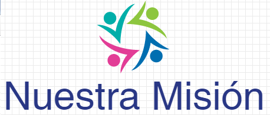
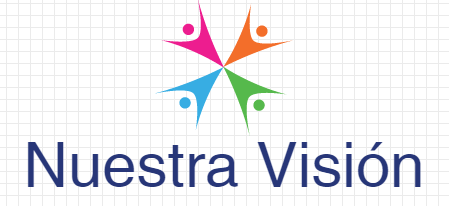

Nuestro diferencial se basa en esta característica: un colegio cuyos
logros educativos se basan en conocer a cada niña para que, según sus
habilidades y capacidades, den lo mejor de sí; estimulándolos para que
mejoren algunos aspectos y potencien otros.
Optar por nuestro colegio es mucho más que una mera opción
de conveniencia, es sumarse a una forma de ver el mundo y una manera
de relacionarse y hacer las cosas que reconoce su fuente en nuestra
concepción cristiana del mundo y de la vida, desde nuestra perspectiva
franciscana y en la huella que Santa María Eufrasia nos marcara.
Desde los principios que enunciamos como propios, asumimos
un desafío arduo pero apasionante:
Ayudar a nuestros alumnos
a crecer. La Institución educativa Nuestra Señora de Lourdes, es un
instituto perteneciente a las Hermanas de la Congregación del Buen
Pastor.
Nos identificamos como escuela católica, es decir, un lugar
de educación integral de la persona humana a través de una propuesta
educativa que tiene su fundamento en Cristo.
| |
 |  |
Somos una Institución Educativa Católica, inspirada en el Carisma
de la Congregación del Buen Pastor y en la pedagogía de Santa María
Eufrasía, nos esforzamos por descubrir la imagen de Dios en cada
persona, brindamos una formación Integral, científica humanista de
calidad, acorde con los avances de un mundo globalizado, prevención
y conservación del Medio Ambiente. |
Ser una institución líder que brinde una educación de calidad
basada en los valores esenciales, con personal capacitado,
actualizado acorde al avance científico y tecnológico e
identificado con el carisma de la Congregación del Buen Pastor,
aplicando la Pedagogía de Santa María Eufrasía, en el quehacer
Educativo que garantice una formación integral y competente de
acuerdo a las exigencias y desafíos de la sociedad actual. |